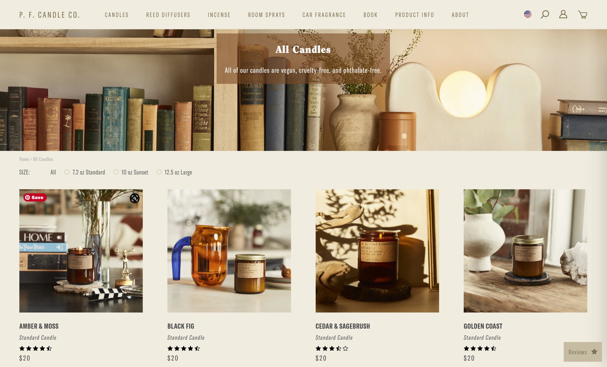
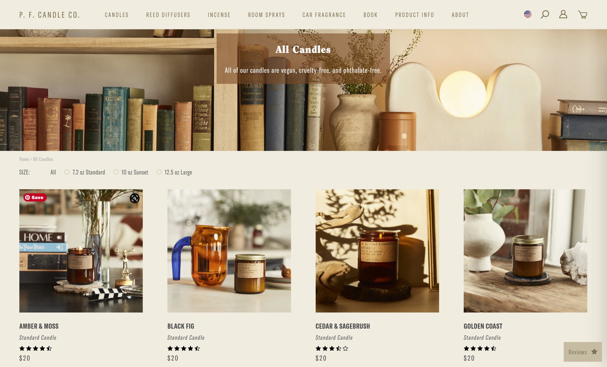
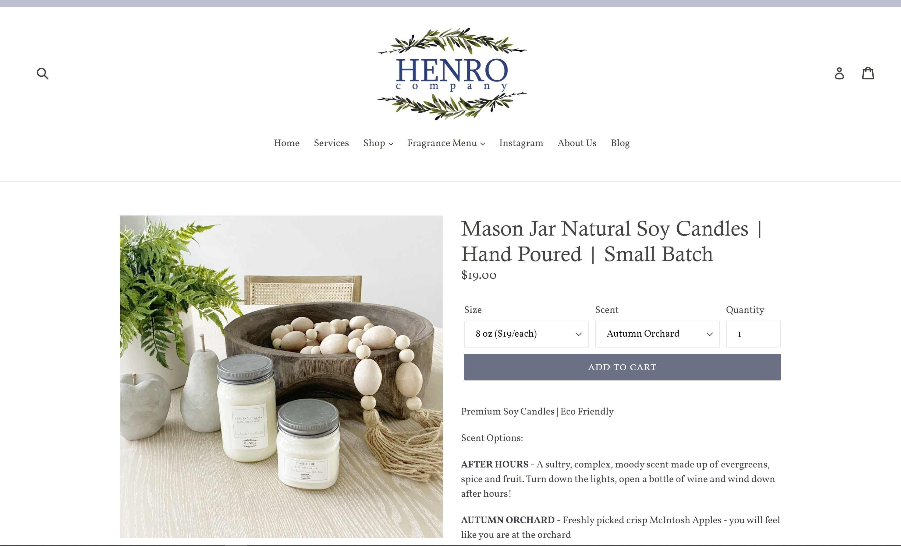
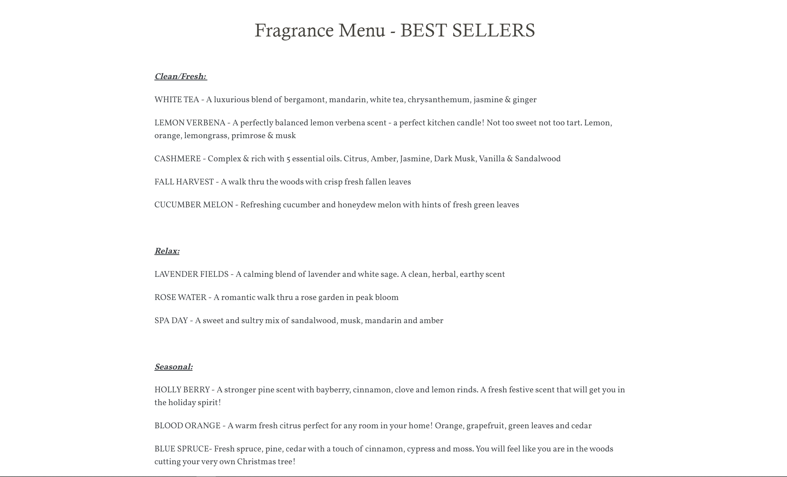
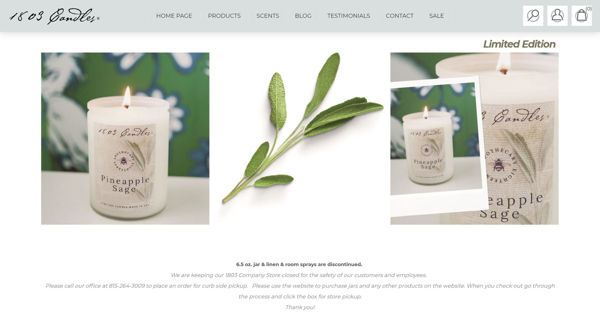
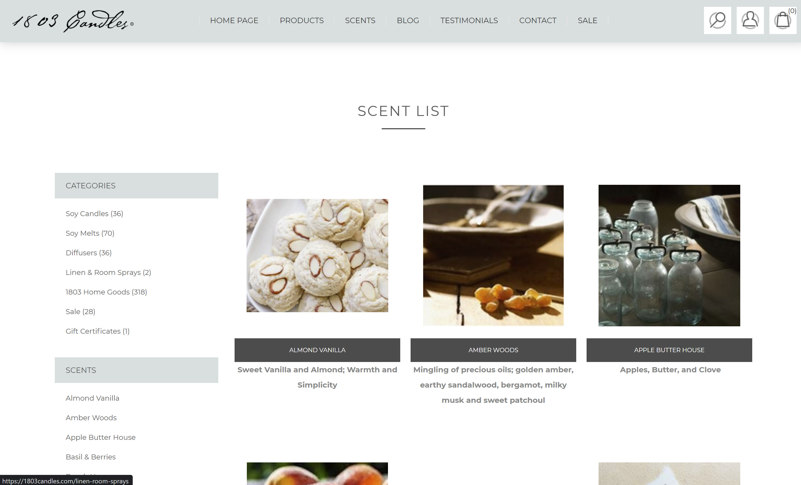

Final project proposal
Introduction
Soy and Wick
Soy and Wick is a local soy candle shop that’s mission is to use natural, locally grown ingredients to curate eco-friendly candles to fill any space with an aroma that gives people a slice of Slome.
Target audience
Soy and Wick candles can be for anyone, but mainly focused on those with a refined and mature sense of smell to fully appreciate all layers of notes delicately curated into each candle. Our candles can fit into any lifestyle with a wide range of scents that each person can enjoy. We are also focused on using ingredients that are natural and won’t be irritating to those who encounter its scent.
The primary goal is to truly make a quality candle. A single candle that can alter the mood of a room in an instant, a candle that can sooth and relax those who are accustomed to the stresses of life, all while assuring our customers that they have purchased a candle that is good for the senses, soul, and environment.
Comparative analysis
P.F. Candle Co.
 

Henro Company
 1803 Candles
 Website content
Home
Locally made. Locally loved. Treat your scenses with a carefully crafted soy candle to set the mood for any event.
[A collage of nature, San Luis Obispo, and the finished product.
About
Soy and Wick is a local soy candle shop that’s mission is to use natural, locally grown ingredients to curate eco-friendly candles to fill any space with an aroma that gives people a slice of Slome.
Our mission is to truly make a quality candle. A single candle that can alter the mood of a room in an instant, a candle that can sooth and relax those who are accustomed to the stresses of life, all while assuring our customers that they have purchased a candle that is good for the senses, soul, and environment.
[A photo of a candle being hand poured]
Visit
We are located right at the heart of Downtown San Luis Obispo at the corner of Higuera and Chorro.
Our hours are Monday-Saturday from 11AM-7PM
793 Higuera St, San Luis Obispo, CA 93405 | 805.555.WICK
[A map of Soy and wick]